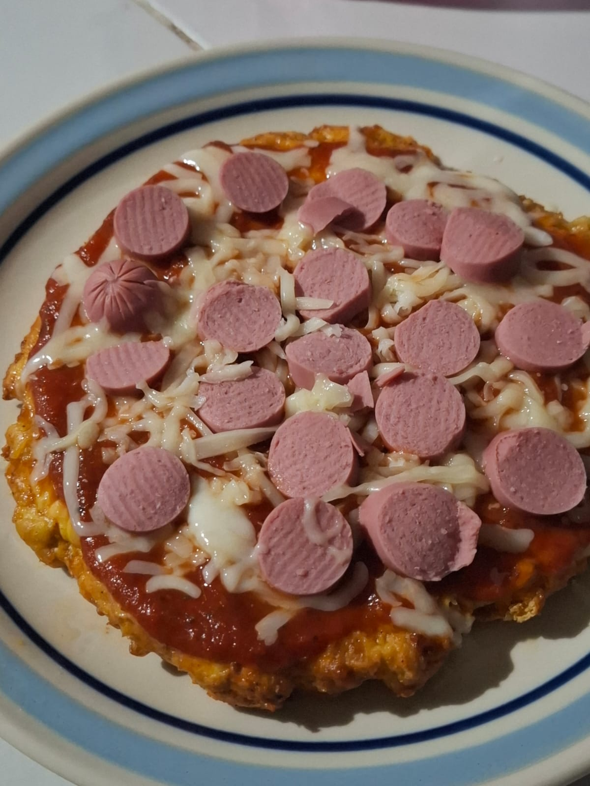

Pizza sin harina

Descripción:
Para esos días de antojo de pizza pero estás evitando las harinas, esta receta es ideal para ti, pues además de ser deliciosa, es alta en proteína y super baja en carbohidratos
Ingredientes:
- 400 gramos de pechuga de pollo molida
- salchichas, peperoni o carnes frías al gusto
- queso de tu preferencia para gratinar al gusto (yo uso mozzarella)
- 1 huevo
- salsa de tomate
- 1 cucharadita de ajo en polvo
- sal y pimienta al gusto
Procedimiento:
- Precalienta el horno a 200°C (400°F)
- Tritura el pollo o cómpralo ya molido y mezcla con el huevo, el queso y todas las especias hasta formar una masa uniforme.
- Extiende la masa sobre una bandeja con papel encerado o engrasada. Dale forma redonda o rectangular con un grosor de unos 5 mm (ni muy delgada ni muy gruesa).
- Hornea por 15-20 minutos o hasta que la base esté firme y dorada.
- Saca del horno, agrega tu salsa y toppings favoritos.
- Hornea nuevamente por 10 minutos hasta que el queso se derrita y los ingredientes se integren bien.
Tip: Si quieres que quede más crujiente, puedes voltearla con cuidado después de los primeros 15 minutos y hornear unos 5 minutos extra antes de poner los toppings.
Inicio